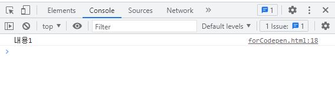

JQuery 필터선택자
JQuery의 필터 선택자입니다.
선택자에 ":" 이 붙은 선택자를 필터선택자라고 합니다.
1. 기본 필터 선택자
| 선택자 종류 | 설명 | |
|---|---|---|
| :even | $("tr:even") | tr 요소 중 짝수 행만 선택합니다. |
| :odd | $("tr:odd") | tr 요소 중 홀수 행만 선택합니다. |
| :first | $("td:first") | 첫 번째 td 요소를 선택합니다. |
| :last | $("td:last") | 마지막 td 요소를 선택합니다. |
| :header | $("td:header") | 헤딩(h1~h6) 요소를 선택합니다. |
| :eq() | $("li:eq(0)") | index가 0인 li요소를 선택합니다. index는 0번이 첫 번째 요소입니다. |
| :gt() | $("li:gt(0)") | index가 0보다 큰 li요소를 선택합니다. |
| :lt() | $("li:lt(2)") | index가 2보다 작은 li요소를 선택합니다. |
| :not() | $("li:not(.bg)") | li요소 중에서 class명이 bg가 아닌 li 요소를 선택합니다. |
| :root() | $(":root") | html을 의미합니다. |
| :animated | $(":animated") | 움직이는 요소를 선택합니다. |
2. 자식 필터 선택자
자식 필터 선택자 중 'child'가 붙은 선택자는 요소가 순차적으로 나열되어 있을 때 사용합니다. 'of-type'이 붙은 선택자는 요소가 순차적으로 나열되어 있지 않아도 동일 요소이면 선택이 가능합니다.
| 선택자 종류 | 설명 | |
|---|---|---|
| :first-child | $("span:first-child") | 첫 번째 span 요소를 선택합니다. |
| :last-child | $("span:last-child") | 마지막 span 요소를 선택합니다. |
| :first-of-type | $("span:first-of-type") | span 요소 중에서 첫 번째 span 요소를 선택합니다. |
| :last-of-type | $("span:last-of-type") | span 요소 중에서 마지막 span 요소를 선택합니다. |
| :nth-child() | $("span:nth-child(2)") |
두 번째 span 요소를 선택합니다. nth-child(2n)은 2, 4, 6, ... 번째 요소를 선택하고, nth-child(2n+1)은 1, 3, 5, ... 번째 요소를 선택합니다. |
| :nth-last-child() | $("span:nth-last-child(2)") | 마지막에서 두 번째 span 요소를 선택합니다. |
| :nth-of-type() | $("span:nth-of-type(2)") | span 요소 중에서 두 번째 span 요소를 선택합니다. |
| :nth-last-of-type() | $("span:nth-last-of-type(2)") | span 요소 중 마지막에서 두 번째 span 요소를 선택합니다. |
| :only-child() | $("div > span:only-child") | div의 자식 요소에서 오직 span 요소가 하나만 있는 span 요소를 선택합니다. |
| :only-of-type() | $("div > span:only-of-type") | div의 자식 요소에서 span 요소가 하나만 있는 span 요소를 선택합니다. |
3. 콘텐츠 필터 선택자
| 선택자 종류 | 설명 | |
|---|---|---|
| :contains() | $("p:contains('html')") | p요소 중에서 'html' 텍스트를 포함하고 있는 p 요소를 선택합니다. |
| :empty | $("div:empty") | div요소 중에서 자식 요소가 없는 div 요소를 선택합니다. |
| :parent | $("span:parent") | span 요소 중에 자식 요소가 있는 span 요소를 선택합니다. |
| :has() | $("section:has(article)") | section 요소 중에서 article을 하위 요소로 가지고 있는 section 요소를 선택합니다. |
4. 폼 필터 선택자
| 선택자 종류 | 설명 | |
|---|---|---|
| :text | $("input:text") | <input type="text"> 요소를 선택합니다. |
| :password | $("input:password") | <input type="password"> 요소를 선택합니다. |
| :image | $("input:image") | <input type="image"> 요소를 선택합니다. |
| :file | $("input:file") | <input type="file"> 요소를 선택합니다. |
| :button | $(":button") | <input type="button">, <button> 요소를 선택합니다. |
| :checkbox | $("input:checkbox") | <input type="checkbox"> 요소를 선택합니다. |
| :radio | $("input:radio") | <input type="radio"> 요소를 선택합니다. |
| :submit | $("input:submit") | <input type="submit"> 요소를 선택합니다. |
| :reset | $("input:reset") | <input type="reset"> 요소를 선택합니다. |
| :input | $(":input") | 모든 <input> 요소를 선택합니다. |
| :checked | $("input:checked") | <input> 요소에 checked 속성이 있는 요소를 선택합니다. |
| :selected | $("option:selected") | <option> 요소에 selected 속성이 있는 요소를 선택합니다. |
| :focus | $("input:focus") | 현재 <input>에 포커스가 있는 요소를 선택합니다. |
| :disabled | $("input:disabled") | <input>에 disabled 속성이 있는 요소를 선택합니다. |
| :enabled | $("input:enabled") | <input>에 disabled 가 아닌 요소를 선택합니다. |
5. 가시성 필터 선택자
| 선택자 종류 | 설명 | |
|---|---|---|
| :hidden | div:hidden | div 요소 중 hidden인 요소를 선택합니다. |
| :visible | div:visible | div 요소 중 visible인 요소를 선택합니다. |
